기계설계산업기사 (2020-08-22 기출문제)
1과목: 기계가공법 및 안전관리
1. 공작기계의 3대 기본운동이 아닌 것은?
- 전단운동
- 절삭운동
- 이송운동
- 위치조정운동
(정답률: 71%)

2. 숫돌 입자의 크기를 표시하는 단위는?
- mm
- cm
- mesh
- inch
(정답률: 75%)
3. 고속가공의 특성에 대한 설명으로 틀린 것은?
- 황삭부터 정삭까지 한 번의 셋업으로 가공이 가능하다.
- 열처리된 소재는 가공할 수 없다.
- 칩(chip)에 열이 집중되어, 가공물은 절삭열 영향이 적다.
- 가공시간을 단축시켜, 가공능률을 향상시킨다.
(정답률: 69%)
4. 다음 중 분할법의 종류에 해당하지 않는 것은?
- 단식분할법
- 직접분할법
- 차동분할법
- 간접분할법
(정답률: 53%)
5. 보링 머신에서 사용되는 공구는?
- 엔드밀
- 정면 커터
- 아버
- 바이트
(정답률: 52%)
6. 길이 400mm, 지름 50mm의 둥근 일감을 절삭속도 100m/min로 1회 선삭하려면 절삭시간은 약 몇 분 걸리겠는가? (단, 이송은 0.1 mm/rev 이다.)
- 2.7
- 4.4
- 6.3
- 9.2
(정답률: 53%)
7. 밀링 머신에서 절삭공구를 고정하는데 사용되는 부속장치가 아닌 것은?
- 아버(arbor)
- 콜릿(collet)
- 새들(saddle)
- 어댑터(adapter)
(정답률: 65%)
8. 연삭숫돌의 결합체(bond)와 표시기호의 연결이 바른 것은?
- 셸락 : E
- 레지노이드 : R
- 고무 : B
- 비트리파이드 : F
(정답률: 58%)
9. 목재, 피혁, 직물 등 탄성이 있는 재료로 된 바퀴 표면에 부착시킨 미세한 연삭 입자로서 연삭 작용을 하게되어 가공 표면을 버핑 전에 다듬질 하는 방법은?
- 폴리싱
- 전해가공
- 전해연마
- 버니싱
(정답률: 61%)
10. 기어 절삭기에서 창성법으로 치형을 가공하는 공구가 아닌 것은?
- 호브(hob)
- 브로치(broach)
- 래크 커터(rack cutter)
- 피니언 커터(pinion cutter)
(정답률: 65%)
11. 밀링가공에서 하향절삭 작업에 관한 설명을 틀린 것은?
- 절삭력이 하향으로 작용하여 가공물 고정이 유리하다.
- 상향절삭보다 공구수명이 길다.
- 백래시 제거 장치가 필요하다.
- 기계강성이 낮아도 무방하다.
(정답률: 66%)
12. 공기 마이크로미터에 대한 설명으로 틀린 것은?
- 압축 공기원이 필요하다.
- 비교 측정기로 1개의 마스터로 측정이 가능하다.
- 타원, 테이퍼, 편심 등의 측정을 간단히 할 수 있다.
- 확대 기구에 기계적 요소가 없기 때문에 장시간 고정도를 유지할 수 있다.
(정답률: 60%)
13. 3개 조(jaw)가 120° 간격으로 배치되어 있고, 조가 동일한 방향, 동일한 크기로 동시에 움직이며 원형, 삼각, 육각 제품을 가공하는데 사용하는 척은?
- 단동척
- 유압척
- 복동척
- 연동척
(정답률: 68%)
14. 구성인선의 방지대책에 관한 설명 중 틀린 것은?
- 경사각을 작게 한다.
- 절삭 깊이를 적게 한다.
- 절삭 속도를 빠르게 한다.
- 절삭공구의 인선을 예리하게 한다.
(정답률: 67%)
15. 공기 마이크로미터를 원리에 따라 분류할 때 이에 속하지 않는 것은?
- 광학식
- 배압식
- 유량식
- 유속식
(정답률: 61%)
16. 고속도강 드릴을 이용하여 황동을 드릴링 할 때, 적합한 드릴의 선단각은?
- 60°
- 90°
- 110°
- 125°
(정답률: 59%)
17. 밀링작업에 대한 안전사항으로 틀린 것은?
- 가동 전에 각종 렙, 자동이송, 급속이송장치 등을 반드시 점검한다.
- 정면커터로 절삭작업을 할 때 칩 커버를 벗겨 놓는다.
- 주축속도를 변속시킬 때에는 반드시 주축이 정지한 후에 변환한다.
- 밀링으로 절삭한 칩은 날카로우므로 주의하여 청소한다.
(정답률: 81%)
18. 금긋기 작업을 할 때 유의사항으로 틀린 것은?
- 선은 가늘고 선명하게 한 번에 그어야 한다.
- 금긋기 선은 여러 번 그어 혼동이 일어나지 않도록 한다.
- 기준면과 기준선을 설정하고 금긋기 순서를 결정하여야 한다.
- 같은 치수의 금긋기 선은 전후, 좌우를 구분하지 말고 한 번에 긋는다.
(정답률: 66%)
19. 해머 작업 시 유의사항으로 틀린 것은?
- 녹이 있는 재료를 가공할 때는 보호 안경을 착용한다.
- 처음에는 큰 힘을 주면서 가공한다.
- 기름이 묻은 손이나 장갑을 끼고 가공을 하지 않는다.
- 자루가 불안정한 해머는 사용하지 않는다.
(정답률: 82%)
20. 합금 공구강에 대한 설명으로 틀린 것은?
- 탄소공구강에 비해 절삭성이 우수하다.
- 저속 절삭용, 총형 절삭용으로 사용된다.
- 합금공구강에는 Ag, Hg의 원소가 포함되어 있다.
- 경화능을 개선하기 위해 탄소공구강에 소량의 합금원소를 첨가한 강이다.
(정답률: 62%)
2과목: 기계제도
21. 스퍼 기어의 도시 방법에 관한 설명으로 옳은 것은?
- 잇봉우리원은 가는 실선으로 표시한다.
- 피치원은 가는 2점 쇄선으로 표시한다.
- 이골원은 가는 1점 쇄선으로 그린다.
- 축에 직각인 방향에서 본 그림을 단면으로 도시할 때는 이골의 선은 굵은 실선으로 그린다.
(정답률: 58%)
22. 그림과 같은 입체도의 화살표 방향 투상도를 가장 적합한 것은?
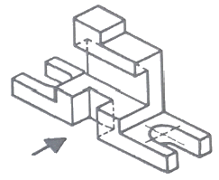
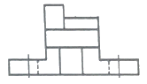
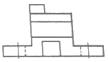
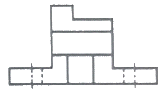
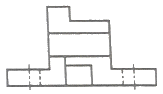
(정답률: 79%)
23. 입체도의 화살표 방향이 정면일 경우 평면도로 가장 적합한 투상도는?
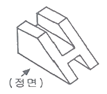
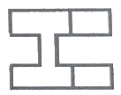
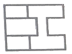
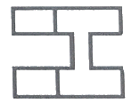
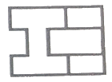
(정답률: 79%)
24. ø100e7인 축에서 치수공차가 0.035이고, 위치수허용차가 –0.072라면 최소허용치수는 얼마인가?
- 99.893
- 99.928
- 99.965
- 100.035
(정답률: 56%)
25. 기하공차를 나타내는데 있어서 대상면의 표면은 0.1mm만큼 떨어진 두 개의 평행한 평면 사이에 있어야 한다는 것을 나타내는 것은?
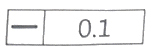
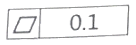
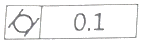
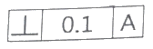
(정답률: 69%)
26. 재료 기호가 'STD 10'으로 나타날 때 이 강재의 종류로 옳은 것은?
- 기계 구조용 합금강
- 탄소 공구강
- 기계 구조용 탄소강
- 합금 공구강
(정답률: 47%)
27. 나사의 호칭방법 'L M20×2-6H'의 설명으로 옳은 것은?
- 리드가 3mm
- 암나사 등급 6H
- 왼쪽 감김 방향 2줄 나사
- 나사산의 수가 6개
(정답률: 64%)
28. 치수를 나타내는 방법에 관한 설명으로 틀린 것은?
- 도면에서 정보용으로 사용되는 참고(보조)치수는 공차를 적용하거나 ( ) 안에 표시한다.
- 척도가 다른 형체의 치수는 치수값 밑에 밑줄을 그어서 표시한다.
- 정면도에서 높이를 나타낼 때는 수평의 치수선을 꺾어 수직으로 그은 끝에 90°의 개방형 화살표로 표시하며, 높이의 수치값은 수평으로 그은 치수선 위에 표시한다.
- 같은 형체가 반복될 경우 형체 개수와 그 치수 값을 'x' 기호로 표시하여 치수 기입을 해도 된다.
(정답률: 43%)
29. 리벳의 호칭길이를 나타낼 때 머리 부분까지 포함하여 호칭길이를 나타내는 것은?
- 접시머리 리벳
- 둥근머리 리벳
- 얇은 납작머리 리벳
- 냄비머리 리벳
(정답률: 65%)
30. 기계도면을 용도에 따른 분류와 내용에 따른 분류로 구분할 때, 용도에 따른 분류에 속하지 않는 것은?
- 부품도
- 제작도
- 견적도
- 계획도
(정답률: 51%)
31. 그림과 같은 도형에서 화살표 방향에서 본 투상을 정면으로 할 경우 우측면도로 옳은 것은?
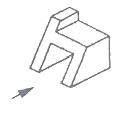
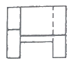
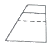
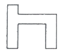
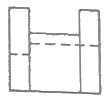
(정답률: 76%)
32. 기계제도의 투상도법의 설명으로 옳은 것은?
- KS규격은 제3각법만 사용한다.
- 제1각법은 물체와 눈 사이에 투상면이 있는 것이다.
- 제3각법은 평면도가 정면도 위에 우측면도는 정면도 오른쪽에 있다.
- 동일한 부품을 각각 제1각법과 제3각법으로 도면을 작성할 경우 배면도의 투상도는 다르다.
(정답률: 71%)
33. 그림과 같은 제품을 굽힘 가공하기 위한 전개길이는 약 몇 mm 인가?
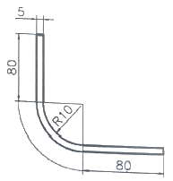
- 169.93
- 179.63
- 185.83
- 190.83
(정답률: 48%)
34. 전동용 기계요소 중 표준 스퍼기어와 헬리컬기어 항목표에 모두 기입하는 것으로 옳은 것은?
- 리드
- 비틀림 방향
- 비틀림 각
- 기준 래크 압력각
(정답률: 49%)
35. 다음 그림이 나타내는 가공 방법은?
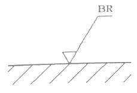
- 대상 면의 선삭가공
- 대상 면의 밀링가공
- 대상 면의 드릴링가공
- 대상 면의 브로칭 가공
(정답률: 79%)
36. 압력 배관용 탄소 강관을 나타내는 KS 재료 기호는?
- SPP
- SPLT
- SPPS
- SPHT
(정답률: 54%)
37. 나사의 종류 중 ISO 규격에 있는 관용 테이퍼 나사에서 테이퍼 암나사를 표시하는 기호는?
- PT
- PS
- Rp
- Rc
(정답률: 59%)
38. 그림과 같은 도면에서 '가' 부분에 들어갈 가장 적절한 기하공차 기호는?
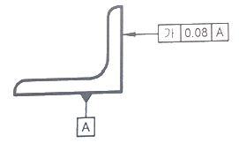
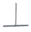
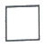
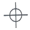
(정답률: 79%)
39. 리벳의 일반적인 호칭 방법 순서로 옳은 것은?
- 표준 번호, 종류, 호칭지름(d)×길이(l), 재료
- 표준번호, 재료, 호칭지름(d)×길이(l), 종류
- 재료, 종류, 호칭지름(d)×길이(l), 표준 번호
- 종류, 재료, 호칭지름(d)×길이(l), 표준 번호
(정답률: 55%)
40. 다음의 원뿔을 전개하였을 때 전개 각도 θ는 약 몇 도인가? (단, 전개도의 치수 단위는 mm 이다.)
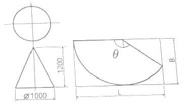
- 120°
- 128°
- 138°
- 150°
(정답률: 42%)
3과목: 기계설계 및 기계재료
41. 분말 야금에 의하여 제조된 소결 베어링 합금으로 급유하기 어려운 경우에 사용되는 것은?
- Y합금
- 켈밋
- 화이트메탈
- 오일리스베어링
(정답률: 67%)
42. 황동에 납을 1.5~3.7%까지 첨가한 합금은?
- 강력 황동
- 쾌삭 황동
- 배빗 메탈
- 델타 메탈
(정답률: 60%)
43. 양은 또는 양백은 어떤 합금계인가?
- Fe-Ni-Mn계 합금
- Ni-Cu-Zn계 합금
- Fe-Ni계 합금
- Ni-Cr계 합금
(정답률: 55%)
44. 수지 중 비결정성 수지에 해당하는 것은?
- ABS 수지
- 폴리에틸렌 수지
- 나일론 수지
- 폴르프로필렌 수지
(정답률: 50%)
45. 다음 중 합금강을 제조하는 목적으로 적당하지 않은 것은?
- 내식성을 증대시키기 위하여
- 단접 및 용접성 향상을 위하여
- 결정입자의 크기를 성장시키기 위하여
- 고온에서의 기계적 성질 저하를 방지하기 위하여
(정답률: 62%)
46. 일반적으로 탄소강의 청열취성이 나타나는 온도(℃)는?
- 50 ~ 150
- 200 ~ 300
- 400 ~ 500
- 600 ~ 700
(정답률: 58%)
47. 금속을 0 K 가까이 냉각하였을 때, 전기저항이 0에 근접하는 현상은?
- 초소성 현상
- 초전도 현상
- 감수성 현상
- 고상 접합 현상
(정답률: 75%)
48. 탄소강에 대한 설명 중 틀린 것은?
- 인은 상온 취성의 원인이 된다.
- 탄소의 함유량이 증가함에 따라 연신율은 감소한다.
- 황은 적열 취성의 원인이 된다.
- 산소는 백점이나 헤어 크랙의 원인이 된다.
(정답률: 53%)
49. 주철의 성장을 억제하기 위하여 사용되는 첨가 원소로 가장 적합한 것은?
- Pb
- Sn
- Cr
- Cu
(정답률: 44%)
50. 심냉 처리의 효과가 아닌 것은?
- 재질의 연화
- 내마모성 향상
- 치수의 안정화
- 담금질한 강의 경도 균일화
(정답률: 55%)
51. 블록 브레이크의 설명으로 틀린 것은?
- 큰 회전력의 전달에 알맞다.
- 마찰력을 이용한 제동장치이다.
- 블록 수에 따라 단식과 복식으로 나뉜다.
- 블록 브레이크는 회전 장치와 제동에 사용된다.
(정답률: 55%)
52. 표준 평기어를 측정하였더니 잇수 Z=54, 바깥지름 Do=280mm이었다. 모듈 m, 원주피치 p, 피치원지름 D는 각각 얼마인가?
- m=5, p=15.7mm, D=270mm
- m=7, p=31.4mm, D=270mm
- m=5, p=15.7mm, D=350mm
- m=7, p=31.4mm, D=350mm
(정답률: 54%)
53. 베어링 설치 시 고려해야 하는 예압(preload)에 관한 설명으로 옳지 않은 것은?
- 예압은 축의 흔들림을 적게 하고, 회전정밀도를 향상시킨다.
- 베어링 내부 틈새를 줄이는 효과가 있다.
- 예압량이 높을수록 예압 효과가 커지고, 베어링 수명에 유리하다.
- 적절한 예압을 적용할 경우 베어링의 강성을 높일 수 있다.
(정답률: 61%)
54. 지름 50mm인 축에 보스의 길이 50mm인 기어를 붙이려고 할 때 250N·m의 토크가 작용한다. 키에 발생하는 압축 응력은 약 몇 MPa 인가? (단, 키의 높이는 키홈 깊이의 2배이며, 묻힘 키의 폭과 높이는 b×h=15mm×10mm 이다.)
- 30
- 40
- 50
- 60
(정답률: 38%)
55. 잇수가 20개인 스프로킷 휠이 롤러 체인을 통해 8kW의 동력을 받고 잇다. 이 스프로킷 휠의 회전수는 약 몇 rpm 인가? (단, 파단하중은 22.1 kN, 안전율은 15, 피치는 15.88mm이며, 부하보정계수는 고려하지 않는다.)
- 5⑤
- 1026
- 1650
- 1868
(정답률: 37%)
56. 공기스프링에 대한 설명으로 틀린 것은?
- 감쇠성이 적다.
- 스프링 상수 조절이 가능하다.
- 종류로 벨로즈식, 다이어프램식이 있다.
- 주로 자동차 및 철도차량용의 서스팬션(suspension) 등에 사용된다.
(정답률: 47%)
57. 다음 중 변형률(strain, ε)에 관한 식으로 옳은 것은? (단, ℓ : 재료의 원래길이, λ : 줄거나 늘어난 길이, A : 단면적, σ : 작용 응력)
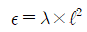
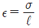
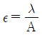
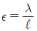
(정답률: 55%)
58. 굽힘 모멘트만을 받는 중공축의 허용 굽힘응력 σb, 중공축의 바깥지름 D, 여기에 작용하는 굽힘모멘트M일 때, 중공축의 안지름 d를 구하는 식으로 옳은 것은?
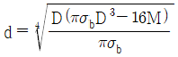
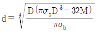
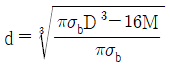
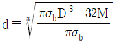
(정답률: 45%)
59. 1줄 겹치기 리벳 이음에서 리벳의 수는 3개, 리벳 지름은 18mm, 작용 하중은 10kN 일 때 리벳 하나에 작용하는 전단응력은 약 몇 MPa 인가?
- 6.8
- 13.1
- 24.6
- 32.5
(정답률: 37%)
60. 50kN의 축방향 하중과 비틀림이 동시에 작용하고 있을 때 가장 적절한 최소 크기의 체결용 미터나사는? (단, 허용인장응력은 45N/mm2 이고, 비틀림 전단응력은 수직응력의 1/3 이다.)
- M36
- M42
- M48
- M56
(정답률: 26%)
4과목: 컴퓨터응용설계
61. 좌표계의 원점이 중심이고 경도 u, 위도 v로 표시되는 구의 매개 변수식
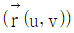
으로 옳은 것은? (단, 구의 반경은 R로 가정하고,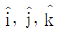
는 각각 x, y, z축 방향의 단위벡터이며, 0≦u≦2π,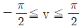
이다.)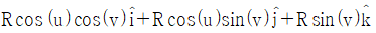
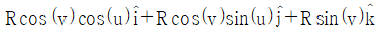
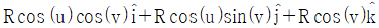
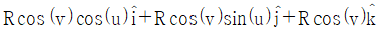
(정답률: 37%)
62. 와이어 프레임 모델에 관한 설명으로 틀린 것은?
- 은선 제거가 불가능하다.
- 단면도 작성을 간단히 할 수 있다.
- 질량이나 체적 계산이 불가능하다.
- 3면 투시도 작성이 편리하다.
(정답률: 43%)
63. 다음 중 설계기능을 지원하기 위해서 CAD시스템을 사용하는 이유로 보기 어려운 것은?
- 설계자의 생산성을 높이기 위해
- 설계의 품질을 개선하기 위해
- 설계 문서화 개선을 위해
- 설계이력을 제거하기 위해
(정답률: 72%)
64. 3차원 형상의 솔리드 모델링에서 B-rep과 비교하여 CSG(Constructive Solid Geomrtry) 방식을 나타낸 것은?
- 입체의 표면적 계산이 비교적 이용하다.
- 3면도, 투시도, 전개도 작성이 용이하다.
- 화면의 재생 시간이 적게 소요된다.
- 기본입체형상의 불 연산(boolean)에 의한 모델링이다.
(정답률: 42%)
65. 부품들 사이의 만남 조건(mating condition)을 이용하여 형상을 모델링하는 방법은?
- 파라메트릭(parametric) 모델링
- 비다양체(nonmanifold) 모델링
- B-rep 모델링
- 조립체(assembly) 모델링
(정답률: 55%)
66. 점, 선, 프로파일(윤곽선)을 경로에 따라 이동하여 베이스, 보스, 자르기 또는 곡면 형상을 생성하는 모델링 기법은?
- 스키닝(skinning)
- 리프팅(lifting)
- 스윕(sweep)
- 특징형상모델링(feature-based modeling)
(정답률: 56%)
67. 다음 중 서로 다른 기종의 CAD 데이터를 호환하기 위한 데이터 포맷으로 적절하지 않은 것은?
- DXF
- IGES
- STEP
- OpenGL
(정답률: 62%)
68. (x, y) 좌표계에서 다음 방정식으로 정의될 수 있는 형태는? (단, a, b, c는 상수이다.)
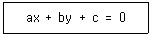
- 타원
- 원
- 직선
- 포물선
(정답률: 52%)
69. 컴퓨터의 입력 장치 중 압력 감지기가 달려 있는 작은 평판을 의미하며 손가락이나 펜 등을 이용해 접촉하면 그 위치정보를 컴퓨터가 인식할 수 있는 장치는?
- 트랙 볼
- 디지타이저
- 터치 패드
- 라이트 펜
(정답률: 67%)
70. CAD의 디스플레이 기능 중 줌(ZOOM) 기능 사용 시 화면에서 나타나는 현상으로 옳은 것은?
- 도형 요소의 치수가 변화한다.
- 도형 형상의 방향이 반대로 바뀌어서 출력된다.
- 도형 요소가 시각적으로 확대, 축소된다.
- 도형 요소가 회전한다.
(정답률: 76%)
71. 그림과 같이 곡면 모델링 시스템에 의해 만들어진 곡면을 불러들여 기존 모델의 평면을 바꿀 수 있는 모델링 기능은?
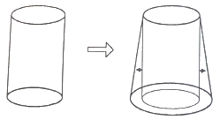
- 네스팅(nesting)
- 트위킹(tweaking)
- 돌출하기(extruding)
- 스트레칭(stretching)
(정답률: 59%)
72. 컴퓨터에 자료를 입력하기 위한 문자 자료의 표현 규칙 중 각각 4비트인 zone과 digit 부분이 합쳐져 8개의 데이터 비트(bit)가 정의되어 있는 코드체계는?
- EBCDIC
- 4-3-2-1 code
- ASCII
- BCDIC
(정답률: 37%)
73. 활용 방식에 따른 CAD 시스템 종류 중 퍼스털 컴퓨터 시스템에 의한 CAD 시스템에 해당하며, 널리 보급되고 가격이 비교적 저렴한 특징을 갖는 것은?
- 독립형 CAD 시스템
- 대형 CAD 시스템
- 중앙통제형 CAD 시스템
- 분산처리형 CAD 시스템
(정답률: 58%)
74. 정전기식 플러터에 대한 설명으로 옳지 않은 것은?
- 주로 마이크로 필름에 출력하는 장치로 사용된다.
- 래스터식으로 운영되는 대표적인 플로터이다.
- 도형의 복잡 유무와 관계없이 작화속도가 거의 일정하다.
- 펜식 플로터와 비교하여 작화속도가 빠르다.
(정답률: 33%)
75. 네 개의 경계곡선을 선형 보간하여 얻어지는 곡면은?
- 쿤스 곡면
- 선형 곡면
- Bezier 곡면
- 그리드 곡면
(정답률: 48%)
76. CAD 시스템에서 점을 정의하기 위해 사용되는 좌표계가 아닌 것은?
- 직교 좌표계
- 원통 좌표계
- 벡터 좌표계
- 구면 좌표계
(정답률: 53%)
77. 베지어(Bezier) 곡선의 특징으로 틀린 것은?
- 특성 다각형의 시작점과 끝점을 반드시 통과한다.
- 특성 다각형의 내측에 존재한다.
- 특성 다각형의 꼭지점 순서로 거꾸로 하여 베지어 곡선을 생성할 경우 다른 곡선이 된다.
- 특성 다각형의 1개의 꼭지점 변화가 베지어 곡선 전체에 영향을 미친다.
(정답률: 50%)
78. 이미 정의된 두 곡면을 매끄러운 곡선을 필렛(fillet)처리하여 연결하는 기능은?
- Smoothing
- Blending
- Remeshing
- Levelling
(정답률: 60%)
79. 서피스 모델(surface model)의 특징이 아닌 것은?
- 은선 제거가 가능하다.
- 단면도를 작성할 수 없다.
- 복잡한 형상 표면이 가능하다.
- 물리적 성질을 구하기 어렵다.
(정답률: 51%)
80. 3차원 좌표계에서 물체의 크기를 각각 x축 방향으로 2배, y축 방향으로 3배, z축 방향으로 4배의 크기변환을 하고자 할 때, 사용되는 좌표변환 행렬식은?
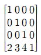
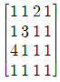
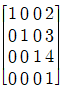
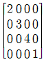
(정답률: 48%)